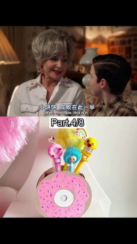
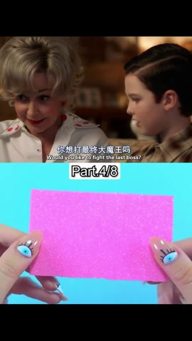
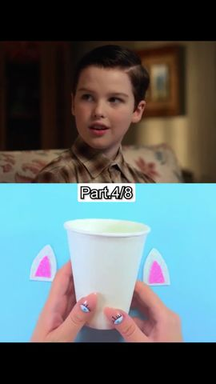
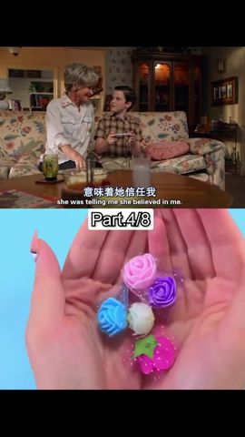

Can an AI spot brainrot if we just tell it what brainrot is?
We gave an off-the-shelf video-language model a short written definition of split-screen “sludge” — no training at all — and measured how its judgement changed on 267 short videos. It reads each clip’s frames and the text of what is said in it.
Platforms flag what is illegal, not what is empty.
TikTok, Instagram and YouTube already remove scams and label deepfakes. Brainrot breaks no rule — it is exactly what a feed tuned for watch time is built to serve — so nothing tells the viewer when a clip is merely hollow. We ask whether a model can give that signal, and say why in one sentence.
One clip, three inputs, one sentence back.
Text is used three times: the clip’s speech goes in as a transcript, our definition goes in as prompt text, and the verdict comes out as a score with a one-sentence reason.
Our definition, in five cases
This exact text is what P1 adds to the prompt.
Same clip, same model — only the prompt text changed




The definition did most of the work.
267 test clips (146 sludge, 121 not), each run once with each prompt after both prompts were frozen. A clip is flagged when its score reaches 0.5.
Accuracy
| Prompt | TP / FP / FN / TN | Precision | Recall | Accuracy |
|---|---|---|---|---|
| P0 · no definition | 110 / 61 / 36 / 60 | 0.643 | 0.753 | 0.637 |
| P1 · definition | 146 / 3 / 0 / 118 | 0.980 | 1.000 | 0.989 |
We checked by hand
Limits
- The test set keeps only clips whose labels were clear-cut, so 0.989 is optimistic for a real feed.
- One brainrot type only: split-screen sludge.
- The model reads what is said, not how it sounds — the voice itself is not an input.
- Both prompts start with “You are a content-safety assistant”, which may push P0 toward judging harm.
Next
Other types — AI-generated characters, AI-voiced slideshows, fast-cut edits — need labelled clips that no public dataset we found provides. A model that hears audio would be needed to judge synthetic voices.
Tap a clip. The filter checks it as it plays.
Clean clips get a small check and keep playing. Split-screen sludge gets a warning with the model’s one-sentence reason — skip it or keep watching.
Switch the prompt at the top of the phone to replay the same clips without our definition and see which verdicts change.